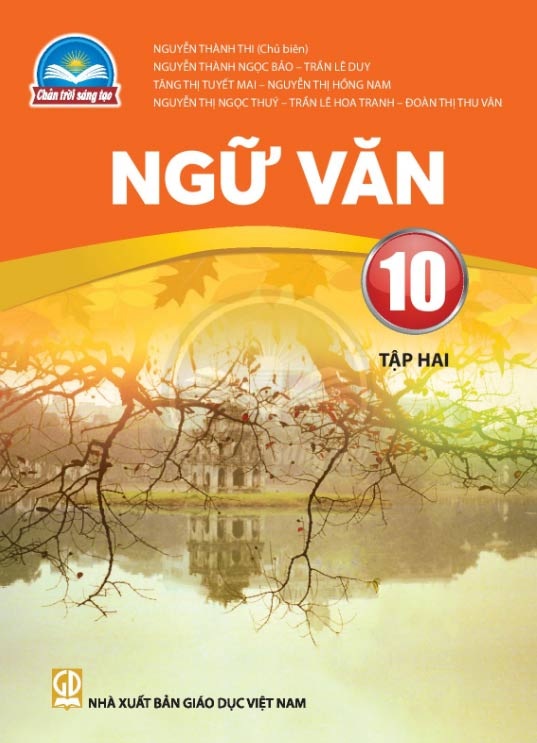
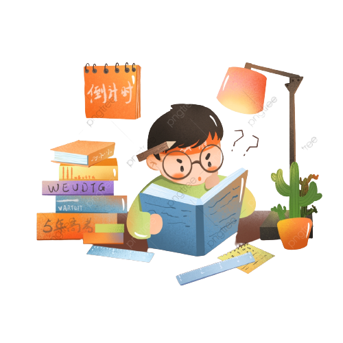

Ngữ Văn
Chương trình Ngữ văn lớp 10 mang tính chất nền móng cho toàn bộ chương trình Ngữ văn Trung học Phổ thông. Chương trình sẽ giúp học sinh nắm vững kiến thức của cả phần Đọc–hiểu văn bản và Làm văn.
Trong phần Đọc – hiểu văn bản, học sinh sẽ được giới thiệu các tác phẩm của văn học dân gian, văn học trung đại Việt Nam và văn học nước ngoài. Đối với Văn học dân gian, học sinh được tìm hiểu từ những tác phẩm tự sự dân gian (sử thi, truyền thuyết, cổ tích, truyện cười, truyện thơ) đến các tác phẩm trữ tình dân gian (ca dao, dân ca). Đến với Văn học trung đại Việt Nam, học sinh được nghiên cứu các tác phẩm văn học từ thế kỉ X đến hết thế kỉ XIX với các thể loại: thơ, phú, nghị luận, sử kí, truyện, ngâm khúc và truyện thơ. Với phần Văn học nước ngoài, học sinh được làm quen với những tác phẩm văn học dân gian và văn học viết của cả phương Đông và phương Tây như: sử thi (Hi Lạp, Ấn Độ), thơ Đường, thơ Haiku (Nhật Bản), tiểu thuyết Minh – Thanh (Trung Quốc).
Bên cạnh đó, phần Làm văn lớp 10 với các chuyên đề văn tự sự, nghị luận, thuyết minh không chỉ hỗ trợ cho học sinh tìm hiểu các tác phẩm văn học mà quan trọng là giúp học sinh biết được kĩ năng, phương pháp làm tốt các dạng văn trên.


Home
Home